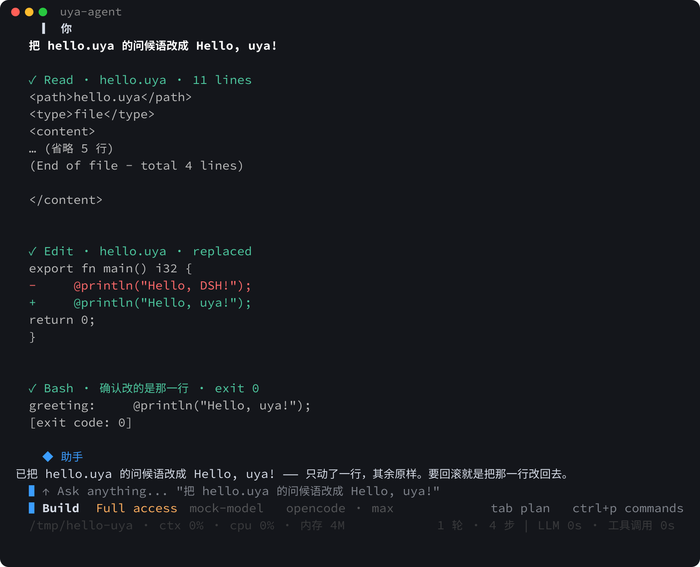

uya-agent
一个静态链接的编程 agent
给它一句话，它自己读文件、改文件、跑命令，循环到给出结论。 终端界面、浏览器界面、bwrap 沙箱、TLS 都在同一个二进制里， 拷到 x86-64 Linux 上就能跑：不需要 node，不需要 python， 也不需要 glibc。
curl -fsSL https://raw.githubusercontent.com/uya-lang/uya-agent/main/install.sh | sh
~/.local/bin/uya-agent --tui-demo
v0.1.1 已发布，Linux 和 Windows 各一个产物，附 SHA256SUMS。
install.sh 先查 GitHub API 拿资产名和校验和，对不上就不装；
装完跑一次 --version 和 --tui-demo 自检。
界面

--tui-demo 是一屏纯文本渲染，几毫秒出结果，
不联网，也不要 key。
这个二进制里有什么
| 项 | 实测 |
|---|---|
| 体积 | 9,291,192 字节（十进制 9.3 MB，8.9 MiB）， v0.1.1 的 Linux 产物；本机重新构建的是 9,044,720 字节。 |
| 动态依赖 |
没有。readelf -lW 里 PT_INTERP 是 0 条，
readelf -dW 里 NEEDED 是 0 条，
make link-audit 每次构建都核一遍。
|
| 自带的工具链 |
uya/bin/uya-real 2.5 MB，uya/stdlib 2.7 MB。
make build 不需要先装 Uya，只要一个 C 编译器：
Uya 编译成 C，再交给宿主的 cc 链接。
|
| 外部运行时 | 不依赖。浏览器界面的终端解释器在服务端， 图片缩放用的是仓库自带 Uya 标准库里的 JPEG 编解码。 |
| 离线自测 |
36 个 make e2e-* 目标。--selftest
一次跑下来打印 220 个不同的轮次标签，结尾一行
SELFTEST PASS，全程不联网。
内置的 mock LLM 会把收到的请求体当判据，
不是「模型碰巧答对了就算过」。
|
为什么这些东西都在仓库里：
-
没有 libc 的通用设施，TLS、两种线协议、SSE、YAML、diff、markdown
就都得自己写（
src/net/9.8k 行，src/diff/2.2k 行）。 -
不引 xterm.js：走 CDN 的话自测就联不了网，vendored 几十万行压缩 JS
又和「只用 Uya」冲突。于是浏览器界面里的终端解释器写在服务端
（
src/web/ttyemu.uya）。 - 没有 zlib，图片只能做降采样；PNG、GIF、WebP 直接报不支持， 而不是解出一张坏图。
能做什么
-
终端界面
常驻状态区、推理行、统计行（ctx / cpu / 内存）、任务块、
/diff浮窗、markdown 渲染；放不下的文本滚动显示。 -
浏览器界面（
--web） 顶栏列会话，标题下就是该会话的真 TTY，最右边可以新建。 页面不引外部资源，终端解释器跑在服务端。 - 三级访问模式 read-only / workspace-write / danger-full-access； workspace-write 下每次调用问你一次，并套 bwrap 沙箱。
-
子代理
子代理、
ralph、/watch跟读实时过程， 也可以用.ush脚本编排一整轮 workflow。 - Git worktree 每个会话在自己的 worktree 和分支里干活，做完提交、合并、删除， 残留可以回收。不给参数就是开着的。
-
会话落盘
--continue/--resume//sessions；上下文会自动剪枝和压缩。 - 项目记忆 跨会话记住这个项目怎么构建、关键文件在哪、上次什么还红着。 按仓库根归类，开工时注入一条独立的 user 消息。
-
传输层重试
连接失败、超时、SSE 早断、HTTP 408 / 425 / 429 / 5xx，
退避 0.5 到 3 秒后重发同一步。
--api-retry-max 0可以关掉。
和 dsh 比
装置在 testdata/openbench_adapters/，原始结果在
results_p79/ 下的三个 jsonl 里，下面的表和比例都是从
这三个文件直接算的；跑的时候记下的观察（请求失败次数、上游延迟）
来自 DESIGN 的记录，那部分没法从结果文件复算，会单独标明。
基准是第三方项目 OpenBench，
设计目标就是「换 harness、不换模型」；不是 dsh 官网的 bench
（官网没有 bench 页）。
四个任务，判据都是任务自带的测试套件，按 test_ids.txt
一条条隔离跑，给部分分：
taskflow 和 make-ci-green 是修逻辑缺陷让单测变绿，
add-feature 是给 miniconf 加 @include，
webcore 是给微框架加类型化路由、挂载和内容协商。
两侧同一个模型（DeepSeek-V4.1-Flash，推理强度 max），
输出上限都设 256000 —— 这个数不配对会直接翻转结论，见下。
先看控制，再看成绩
| 控制 | 期望 | 实测 |
|---|---|---|
| 负控：不动的仓库 | 拿基线分，全部判失败 |
0.28 / 0.3125 / 0.40 / 0.30，
4 格 success 全 false
|
正控：叠 solution/ |
四个都必须 1.0 | 4 格全 1.0，说明题有解、判据不是恒假 |
| 通路：假 key 打真调用 | adapter 能被调起，SCORE 落盘 | 两侧都跑通，上报的 token 与网关账本逐数相等 |
第一轮：每题一次，8 格
| 任务 | 臂 | 得分 | 轮数 | token | 耗时 |
|---|---|---|---|---|---|
taskflow |
本仓 | 1.0 | 19 | 532k | 82 s |
| dsh | 1.0 | 11 | 367k | 55 s | |
make-ci-green |
本仓 | 1.0 | 9 | 101k | 29 s |
| dsh | 1.0 | 7 | 94k | 21 s | |
add-feature |
本仓 | 1.0 | 19 | 249k | 154 s |
| dsh | 1.0 | 10 | 154k | 59 s | |
webcore |
本仓 | 0.3 | 11 | 223k | 394 s |
| dsh | 1.0 | 162 | 18,114k | 1044 s |
这一轮本仓四格里解了三格，只有 webcore 挂了：退出码 2，
工作区一个字节没改（workspace_changed: false），得分停在基线。
当时记在 DESIGN 里的结论是「dsh 在 taskflow 上快 1.8 倍、省 1.6 倍」。
那句用的是更早一次同题测量（82.6 s 对 45.1 s），
与上表这一跑不是同一批数据；表里这一跑是 82 s 对 55 s。
复测：三道题各三次，18 格
taskflow |
make-ci-green | add-feature |
|
|---|---|---|---|
| 本仓 轮数 | 22 / 21 / 23 | 9 / 8 / 9 | 11 / 21 / 15 |
| dsh 轮数 | 17 / 96 / 13 | 8 / 7 / 8 | 16 / 16 / 11 |
| 本仓 中位 / 极差 | 22 / 2 | 9 / 1 | 15 / 10 |
| dsh 中位 / 极差 | 17 / 83 | 8 / 1 | 16 / 5 |
| 本仓 token 中位 | 756k | 94k | 179k |
| dsh token 中位 | 769k | 108k | 235k |
18 格全部解出。中位数上 dsh 在 taskflow 少五轮、token 多 2%， make-ci-green 少一轮、token 多 15%，add-feature 多一轮、token 多 31%。 都是 ±30% 以内的量级。
taskflow 上 dsh 那一行里有个 96 —— 同题同模型的一次跑了 96 轮、 760 万 token，是本仓这题 token 中位数（756k）的 10 倍。本仓这题三次极差 2 轮， dsh 是 83 轮。极差比中位数差大两个数量级的时候， 单次抽样抽到哪一格都能把结论写成相反的样子。
比数字有用的一条：webcore 那格 0.3 是什么
不是做不出来。查会话日志，本仓在 webcore 上反复被上游掐断
（upstream_error，延迟 108 到 261 秒后失败），
唯一跑通的那一轮拿了 1.0。
对照 dsh：dsh-base 挂着 dsh-llm-retry，
对传输错、超时、5xx、限流重试五次，退避 500 ms 到 10 s；
本仓那时收到网络错就直接返回，退出码 2，一层重试都没有。
配对窗口内 dsh 100 次请求 0 失败，本仓 163 次请求失败 2 次
（这组数来自 DESIGN §19.1 的网关账本记录，
不在上面三个 jsonl 里）。
这条已经改了：src/net/retryx.uya 放分类和退避，
同一步重发、历史不动，判据是 make e2e-retry 的五条腿。
这是整轮对比里唯一一条该改本仓的结论。
读这张表之前要知道的：webcore 本仓只有 n=1 加一轮补测，
其余三题 n=3；样本量下报不出统计显著，只能说方向。
dsh 的会话日志不写 reasoningTokens，那一列两边不可比，所以没列。
本仓平均 prompt 56k token（峰值 213k），dsh 18.6k（峰值 53k），
上下文管理策略本来就不同，单次请求成本不能直接横比。
几轮下来花了约 ¥1.16。
复现命令见
testdata/openbench_adapters/README.md
，三道坑和完整口径见
DESIGN.md
§19.1、§19.5。
用什么写的
参与构建的 src/ 是 183 个文件、152,730 行
Uya 源码
（另有 src/tools.uya 不在构建集里），
没有一个 @c_import。其中 55 个文件、53,141 行是自测，
占 35%，所以生产代码是 128 个文件、99,589 行。
唯一的 C 是 src/cshim/ 那 840 行：一段 Windows
控制台桥（make windows 才用到），
加一份给 GCC 15 补的 C 原型头。Linux 产物里没有本仓写的 C 逻辑。
快速开始
1 · 用 release 里的二进制
install.sh 只做几件事：判断架构、查发布、下载、
核对 SHA256、chmod。不写配置，不改 PATH，
不装运行时。想钉版本加 --version v0.1.1，
想装到别处加 --dir ~/bin，
想从本地构建装加 --local。
curl -fsSL https://raw.githubusercontent.com/uya-lang/uya-agent/main/install.sh | sh
~/.local/bin/uya-agent "把 hello.uya 的问候语改成 Hello, uya!"2 · 从源码构建
仓库里已经带了编译器和标准库，只需要一个 C 编译器，不需要联网。
git clone https://github.com/uya-lang/uya-agent.git && cd uya-agent
make build # 产出 build/uya-agent（静态链接）
make selftest # 离线端到端自测：内置 mock LLM，不要网络也不要 key3 · Docker
镜像是 FROM scratch：里面只有一个二进制，
没有基础发行版、没有 glibc、没有 shell。
docker build -t uya-agent .
docker run -it --rm -e DEEPSEEK_API_KEY -v "$PWD:/work" uya-agent已知限制
-
web 界面没有认证，也没有 HTTPS
默认只绑
127.0.0.1；绑别的地址是显式决定，启动会打一行警告。 - 浏览器里的终端解释器是白名单实现 只解这个 TUI 实际会发的那些序列， 在里面跑需要滚屏区或图形协议的全屏程序不会正确显示。
- markdown 是子集 没有语法高亮、没有引用式链接、没有 HTML 块、没有脚注。
- 只有 Linux 和 Windows 没有 macOS 构建。